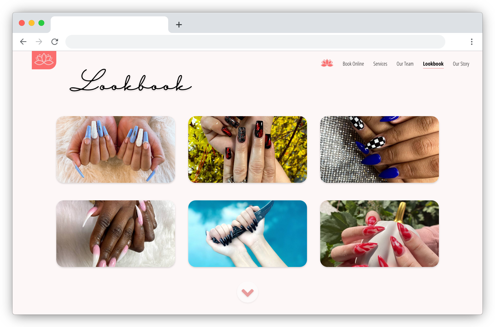

Kelly's Beauty Nail Spa is a nail salon that offers nail, spa, facial, and waxing services to over 36,000 clients every year, averaging to 100 clients per day.
Role - UX Design Intern
Online Booking System
Kelly’s Beauty Nail Spa is an established nail salon who needs to establish an online booking system in order to optimize the booking process and reduce wait times caused by overlapped bookings. Overlaps stresses nail technicians and disappoints clients who wait past their schedule time, which reduces client retention. Right now, the owner, manager, or receptionist in charge spends over 20% of working hours booking clients.
Visual Branding
Currently, the business has no logo. There is no consistent visual branding.
Kelly’s Beauty Nail Spa has a new website that integrates a friendly online appointment booking system, allowing new or returning customers to book appointments quickly, efficiently, and on-the-go. Our goal is to improve the flow and usability of the website by leveraging a hybrid system where clients can book appointments through 1) the website, 2) phone call, or 3) text message. Integrating an online appointment system would maximize efficiency for busy clients. It would also improve customer happiness by minimizing scheduling errors and free up time and energy for all employees.
Local nail salons offer:
Areas we can stand out:
A single page website with a gallery that is not updated and a form for requesting a quote, which sends responses to an email that is never checked.
More organized way for clients, new or returning, to retrieve information and see exactly all the available services.
Type: Unmoderated usability study
Participants: 5 participants
Location: United States, remote
Length: 30 minutes
High Priority
Listing out the team will encourage new clients to browse and make the best selection that is unique for themselves. Beauty is personal, and every journey is unique to the individual. It’s important for clients to have the option to choose the nail technician or esthetician of their preference.
An updated services menu will tell customers exactly what services exist and their cost.
Clients can easily choose the service, the time, and see who's available. Instead of logging in with an account, they can verify by phone number to schedule an appointment and pay in person.

Updated nails showcasing the variety of beauty trends, newest technology, and design capabilities that Kelly’s Beauty Nail Spa has to offer.
